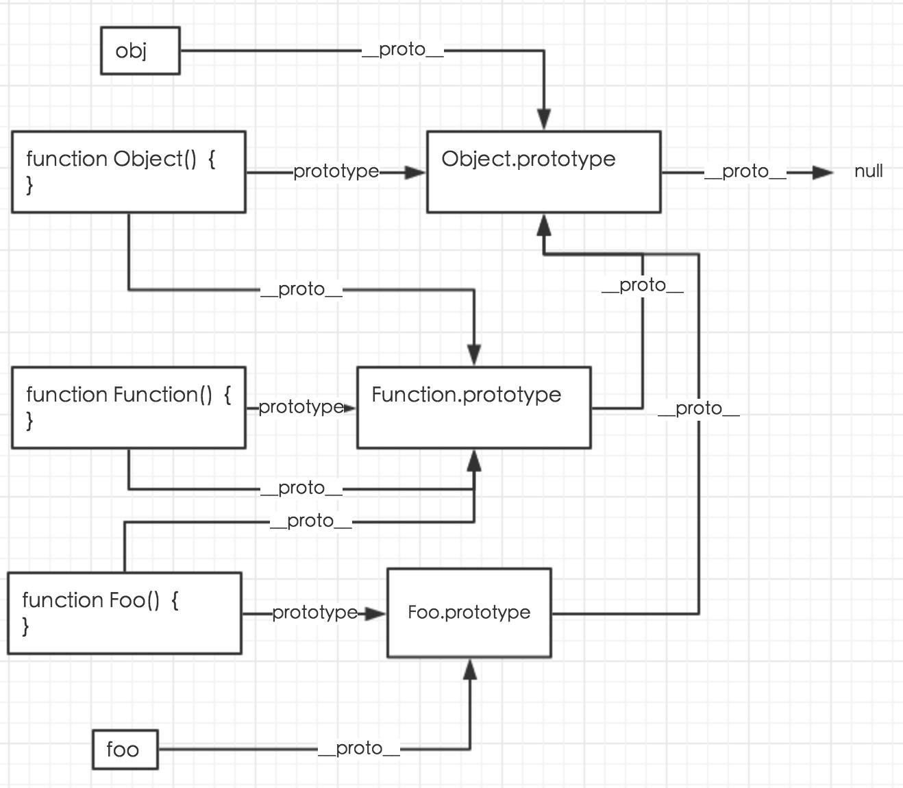

JS里的对象
对象
对象就是一组键值对(key-value)集合,是无序的复合数据集合。类似map结构。
一个对象的键值对之间，用逗号分隔。
💫键名如果是数值，会被自动转为字符串。
如果键名不符合标识名的条件（比如第一个字符为数字，或者含有空格或运算符），且也不是数字，则必须加上引号，否则会报错。
1 | // 报错 |
对象两种调用属性方式，obj.pro | obj[‘pro’]。在上面这个栗子，只能用[‘’]的方式调用。
对象的每一个键名又称为“属性”（property），它的“键值”可以是任何数据类型。如果一个属性的值为函数，通常把这个属性称为“方法”，它可以像函数那样调用。
1 | var obj = { |
表达式还是语句？
如果行首是一个大括号，它到底是表达式还是语句？
1 | { foo: 123 } |
JavaScript 引擎读到上面这行代码，会发现可能有两种含义。第一种可能是，这是一个表达式，表示一个包含foo属性的对象；第二种可能是，这是一个语句，表示一个代码区块，里面有一个标签foo，指向表达式123。
这种差异在eval语句（作用是对字符串求值）中反映得最明显。
1 | eval('{foo: 123}') // 123 |
没有圆括号，eval将其理解为一个代码块；加上圆括号以后，就理解成一个对象。
属性的操作
读取属性
点运算符和方括号运算符。
1 | var obj = { |
上面代码分别采用点运算符和方括号运算符，读取属性p。
请注意，如果使用方括号运算符，键名必须放在引号里面，否则会被当作变量处理。
1 | var foo = 'bar'; |
方括号更加灵活多样，方括号运算符内部还可以使用表达式，点号不行。
1 | obj['hello' + ' world'] |
数字键可以不加引号，因为自动转为字符串。数字键不能用点运算符，会被当成小数点，报错。
1 | var obj = { |
属性的赋值
点运算符和方括号运算符，除了读取，还可用于赋值。
1 | var obj = {}; |
JavaScript 允许属性的“后绑定”，也就是说，你可以在任意时刻新增属性，没必要在定义对象的时候，就定义好属性。
查看所有属性
Object.keys，查看一个对象本身的所有属性(所有‘键’)，返回的是一个数组(Array)。
💡 技巧：想查看一个对象中有多少个键，使用Object.keys(objxx).length方法即可。
(或Object.keys(objxx)[‘length’])
1 | var obj = { |
delete命令
用于删除对象的某个属性，删除成功后返回true
删除存在或不存在的属性，都会返回true；只有一种情况，该属性存在而且不得删除，delete才会返回false。
1 | var obj = { p: 1 }; |
1 | var obj = Object.defineProperty({}, 'p', { |
上面代码之中，对象obj的p属性是不能删除的，所以delete命令返回false（关于Object.defineProperty方法的介绍，请看《标准库》的 Object 对象一章）。
1 | var obj = {}; |
另外，需要注意的是，delete命令只能删除对象本身的属性，无法删除继承的属性（关于继承参见《面向对象编程》章节）。
上面代码中，toString是对象obj继承的属性，虽然delete命令返回true，但该属性并没有被删除，依然存在。这个例子还说明，即使delete返回true，该属性依然可能读取到值。
in运算符
in运算符用于检查对象是否包含某个属性（注意，检查的是键名，不是键值），如果包含就返回true，否则返回false。
1 | var obj = { p: 1 }; |
不能识别哪些属性是对象自身的，哪些属性是继承的。toString方法不是对象obj自身的属性，而是继承的属性。但是，in运算符不能识别，对继承的属性也返回true。
1 | var obj = {}; |
for…in循环
该循环用来遍历一个对象的全部属性。
1 | var obj = {a: 1, b: 2, c: 3}; |
下面是一个使用for...in循环，提取对象属性名的例子。
1 | var obj = { |
对象obj继承了toString属性，该属性不会被for...in循环遍历到，因为它默认是“不可遍历”的。
判断某个属性是不是对象自身的属性(还是继承的?)，返回真假。
1 | var person = { name: '老张' }; |
以上总结From 『js标准参考教程』
全局对象 global
在浏览器中，global为window
window的属性分为两类- ECMAScript规定 (标准化) parseInt | parseFloat
- 私有的(只有某些浏览器有，没有标准)
- alert 弹框提示
- prompt 用户填写
- confirm 确认
- console 开发者
- document （文档） DOM
- history （浏览器） BOM
window的属性或方法，使用时可以省略window
window常用API
Window.Number() | String() | Boolean() | Object()
setTimeout (控制台打出的数字是指计时器序号)
var a = new Number(1); 这时 a的类型为object对象，而不是数字
常用API
Number()
直接声明1和new Number的区别
var n1 = 1; 数字1 栈内存
var n2 = new Number(1); 对象1 栈内存存地址，堆内存有各种属性方法和值
temp = new Number(n1); temp.toString();
然后把temp干掉，把temp.toString()返回表达式n1.toString()
js之父上述后 让n1简单数字 也可以用对象的属性和方法了
切记：临时对象temp会对抹杀，普通类型.xxx时 是引入了一个临时对象temp，这次用完立马抹杀
把简单类型当成对象使用时，都是转成了临时对象temp，用完立刻抹杀。
charAt(index) 获取index索引的字符
charCodeAt(index) index索引字符对应的Unicode编码
Var s = “abcd”; s0 = s.charAt(0); s1 = s.charCodeAt(0);
则s0为“a”,s1为97,s2=s.charCodeAt(0).toString(16),为97的十六进制数61
String()
trim
裁剪左右两边的多余空格
s1 = ‘ heell ’
s1.trim() - s1 = ‘heell’
concat
连接两个字符串
s1 = ‘hello’; s2 = ‘world’;
console.log(s1.concat(s2));‘helloworld’
slice
切片
slice(start,num)，从索引start号开始，切出num片
s1 = “hello”
s1.slice(1,2) - “el”
replace
替换
s1.replace(‘e’,‘o’) - s1 = hollo (替换第一个？)
常用API可见MDN useful string methods
Boolean()
5个falsy值，0 | NaN | “” | null | undefined
其他全都是true，所有对象均为true，包括false对象
⚠️注意：
对象和对象一般都不相等，因为他们地址不一样。即使指向的东西的值一样。
JS里的原型
公用属性——原型
共用属性 toString | valueOf
为了减少内存浪费，不用每个对象里头都存一个toString
对象不存 toString和valueOf,但是可以调用
有一个隐藏的key，__proto__
__proto__ 存的是一个地址,指向那些共用属性 toString|valueOf
⚠️注意：
Number更复杂，__proto__中还套了一层__proto__，第二层__proto__才是指向的所有对象共有的属性，第一层__proto__是含有Number独有的属性
String和Boolean与Number类似，__proto__中还套了一层__proto__
结构像一棵树，Object的共有属性(Object.prototype)相当于树根，
Object.prototype-> 对象的共有属性，也就是实例对象的__proto__对应的值
原型即共有属性的意思
var o1 = new Object();
o1.__proto__ === Object.prototype ✅
其实对象也有两层__proto__,第二层__proto__为null(注意不是undefined)
o1.__proto__.__proto__ === null
var n1 = new Number(1);
n1.__proto__ === Number.prototype
n1.__proto__.__proto__ === Object.prototype
某个实例访问属性，如果该实例的构造函数的prototype没有这个属性，就会往更下一层的__proto__(即Object的共有属性)去找，有的话就可调用成功，如果还是没有就返回undefined。例如上文的 n1.hasOwnProperty就是往下一层的__proto__中找的属性，是对象才有的公共属性。
var __ = new __
var后的为对象，new后面的为函数对象
__proto__是对象的属性，prototype是函数的属性
对象.__proto__ === 函数.prototype
特殊的Function总结
对象.__proto__ == 该对象的构造函数.prototype
__proto__是对象的属性，prototype是函数的属性
Object|String|Number|Boolean|Function都是构造函数否
Object.__proto__ === Function.__proto__
原型对象prototype的所有属性和方法，都能被实例对象共享。
原型对象的作用，就是定义所有实例对象共享的属性和方法。
实例对象的__proto__指向原型对象；
构造函数的prototype指向原型对象；
原型对象的constructor指向构造函数
(即Object===Object.prototype.constructor)
将一个东西当成函数，则用xx.prototype去获取他的原型
将一个东西当成对象，则用xx.__proto__去获取他的原型。
(functionxx.prototype是一个对象,obj.__proto__也是一个对象)
使用__proto__相当于使用一个访问器，
e.g. obj.__proto__ 相当于 Object.getPrototypeOf(obj)
Fuction的构造函数也是Function，
Function.constructor === Function
所以Function.__proto__ === Function.prototype
即Object.getPrototypeOf(Function)===Function.prototype
全等号左侧的Function被当成对象，而右侧的Function被当做函数。
Function是Function的构造函数，
相当于var obj = new Object();
obj.__proto__===Object.prototype
Object是obj的构造函数
Function.prototype.__proto__ = Object.prototype
Function.prototype也是一个对象，对象的__proto__属性即对象的构造函数Object的prototype。
⚠️注意：
Object是所有所有对象的构造函数，而Function是所有所有函数对象(typeof xx为function)的构造函数。所以Object(Object是一个函数对象)的构造函数也是Function，则
Object.__proto__ === Function.prototype
Object.__proto__ === Function.__proto__
附上一张图总结：
